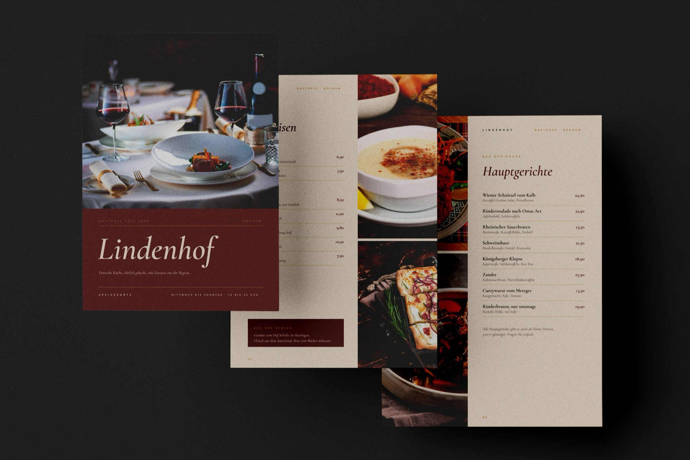
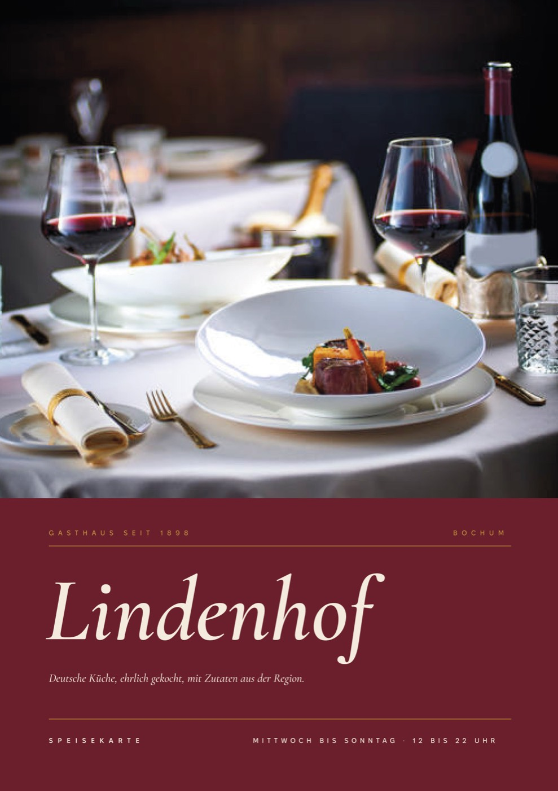
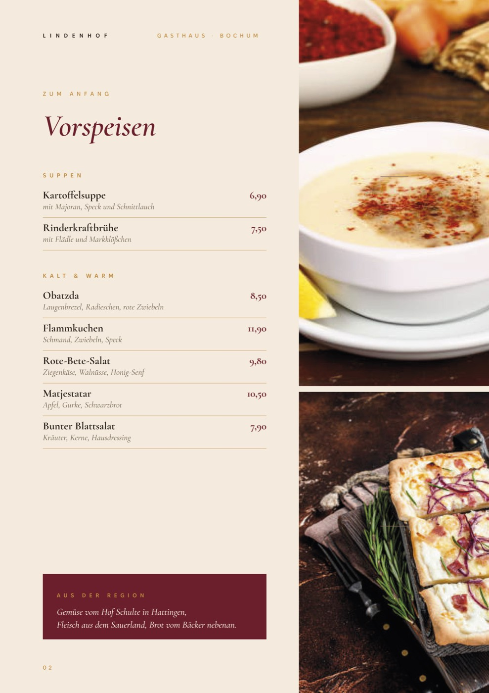
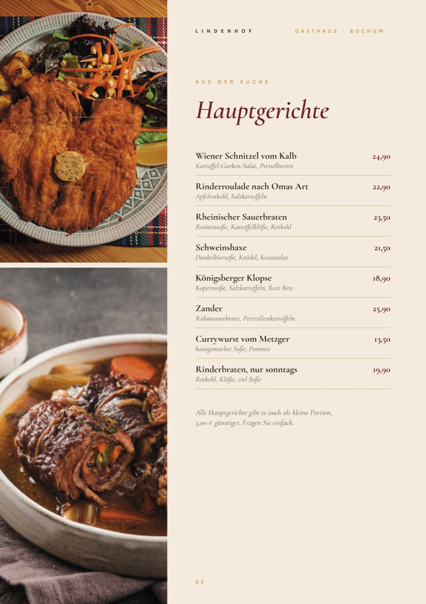
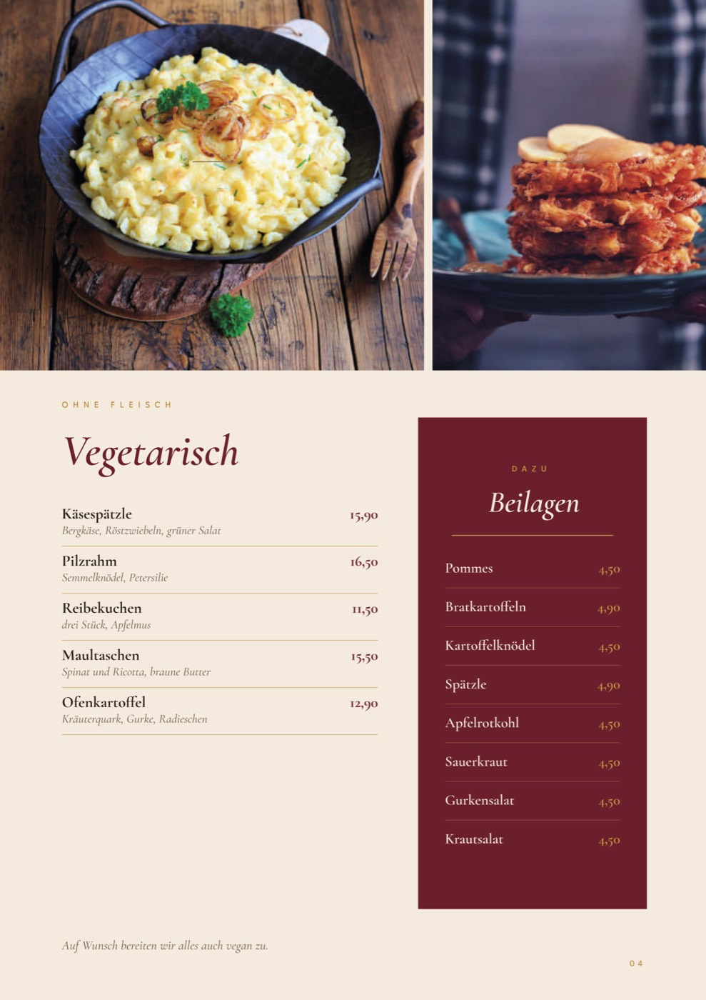
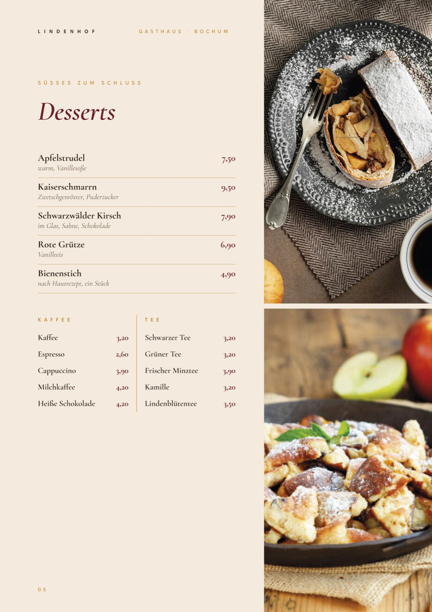
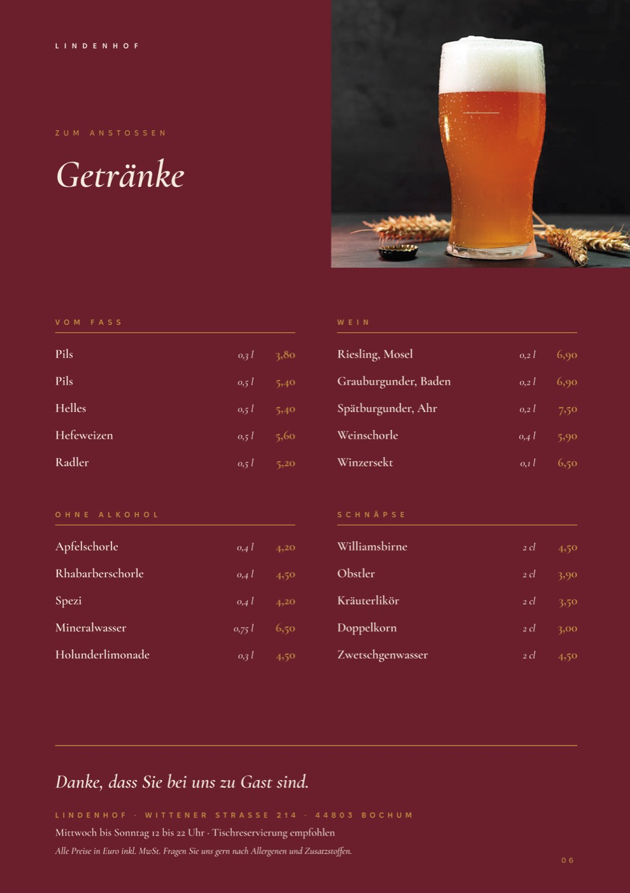

Lindenhof
- Client
- Lindenhof Gasthaus (concept)
- Year
- 2026
- Scope
- Menu, Layout
A menu for a traditional German inn in Bochum. The food leads: large cropped photos next to calm, easy-to-read lists. Ox-blood red, mustard and warm sand make it feel like an evening in a wood-panelled dining room. Photos are stock images used for presentation.




From the kitchen to the table
Six pages that make you hungry and still read easily in low light.
Concept
No folk clichés. A classic serif in italics for headlines, small caps for sections and one strong colour. Every page pairs a list with photos that run off the edge.
- Headlines & dishes
- Cormorant Garamond
- Labels
- Fixel Text
Layout
Photo strips switch sides from page to page. The vegetarian page opens with a wide photo band and a red side-dish column, desserts end with coffee and tea in two columns.


Drinks
The last page turns ox-blood red: beer on tap, wine, soft drinks and schnapps in a 2 × 2 grid, with address and opening hours at the bottom.
